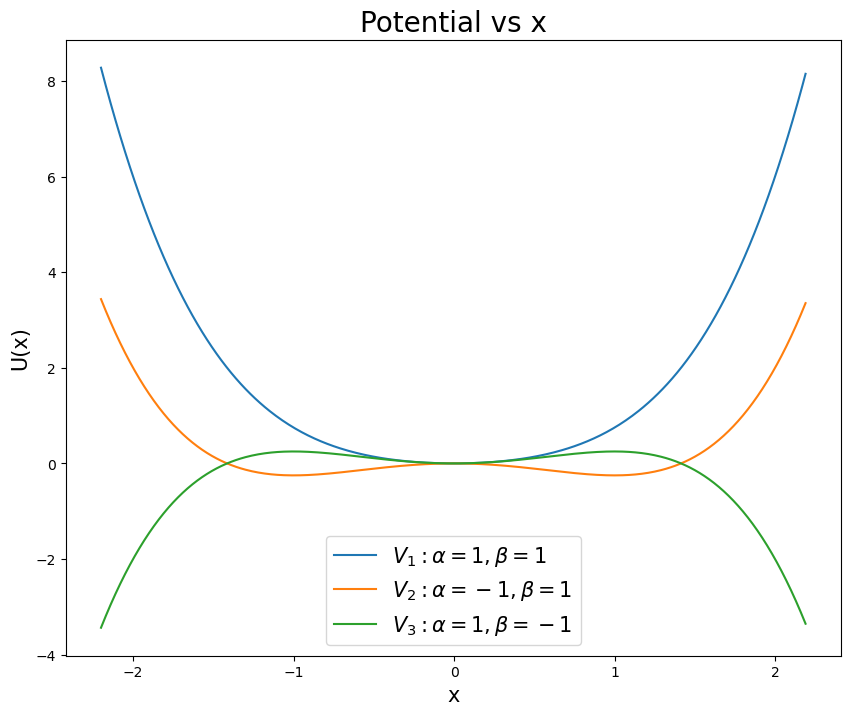

Midterm 2 (Due 11 Apr)#
Spring 2025
import numpy as np
from math import *
import matplotlib.pyplot as plt
import pandas as pd
%matplotlib inline
plt.style.use('seaborn-v0_8-colorblind')
Part 1, The Duffing Oscillator (60pt)#
Consider the following equation of motion for a damped and driven oscillator that is not necessarily linear. This is the Duffing equation, which describes a damped driven simple harmonic oscillator with a cubic non-linearity. It’s equation of motion is given by:
where \(\alpha\), \(\beta\), \(\delta\), \(\gamma\), and \(\omega\) are constants.
Below is a figure showing the strange attractor of the Duffing Oscillator over four periods. It is locally chaotic, but globally it is stable. This is a common feature of non-linear systems.

We focus on this one dimensional case, but we will analyze it in parts to put together a full picture of the dynamics of the system. If you are looking for useful parameter choices and initial conditions, we suggest using those listed on the Wikipedia page.
Recall that the potential for this system can give rise to different kinds of behavior depending on the parameters. The figure below shows the potential for different choices of \(\alpha\) and \(\beta\). Make sure you choose your parameters to match the potential you want to study - pick a stable well for solving for trajectories.

Undamped and undriven case (20 points)#
(5 pt) Consider the undriven and undamped case, \(\delta = \gamma = 0\). What potential would give rise to this kind of equation of motion? Demonstrate that potential gives the expected equation of motion.
(5 pt) Find the equilibrium points of the system for the undriven and undamped case. What are the conditions for stable and unstable equilibrium points? Plot the potential for some choices of \(\alpha\) and \(\beta\) to illustrate your findings.
(5 pt) Plot the phase space for the undriven and undamped case. What are the trajectories of the system? What is the behavior of the system? Does it match your expectations from the potential? The figure above only starts this discussion.
(5 pt) Here you are likely to need a numerical solver. Solve the equation of motion for the undriven and undamped case for a reasonable choice of \(\alpha\) and \(\beta\) and initial conditions. Plot the position as a function of time. What is the behavior of the system? Does it match your expectations from the potential and the phase portrait?
Damped and undriven case (20 points)#
(5 pt) Now consider the damped and undriven case, \(\gamma = 0\). What is the equation of motion in this case? Can you develop this equation of motion fully from a potential (like we did above)? If so, what is the potential? If not, why not?
(5 pt) Plot the phase space for the damped and undriven case. What kinds of trajectories are there?
(10 pt) Here you are likely to need a numerical solver. Solve the equation of motion for the damped and undriven case for a reasonable choice of \(\alpha\), \(\beta\), \(\delta\), and initial conditions. Plot the position as a function of time. What is the behavior of the system? Does it match your expectations from the phase portrait?
Driven and damped case (20 points)#
(5 pt) Now consider the damped and driven case, \(\gamma \neq 0\). What is the equation of motion in this case? Can you develop this equation of motion fully from a potential (like we did above)? If so, what is the potential? If not, why not?
(5 pt) Is it possible to plot the phase space for the driven and damped case? Why or why not? What solutions are available to you to understand the behavior of the system in phase space? Here we are not looking for you to solve the problem, but to conduct research into how people make sense of the behavior of driven and damped systems.
(10 pt) Here you are likely to need a numerical solver. Solve the equation of motion for the driven and damped case for a reasonable choice of \(\alpha\), \(\beta\), \(\delta\), \(\gamma\), \(\omega\), and initial conditions. Plot the position as a function of time. What is the behavior of the system?
Extra credit (up to 30 points)#
(10 pts) The Duffing oscillator can be either a soft or hard spring by changing the sign of the \(\alpha\) term. What happens to the behavior of the system when you change the sign of \(\alpha\)? Can you explain this behavior in terms of the potential?
(20 pts) A critical tool for understanding the behavior of the Duffing oscillator is the Poincaré section. Can you implement a Poincaré section for the driven and damped case? What does it tell you about the behavior of the system?
Part 2, Strange Attractor (40pt)#
We learned about Strange Attractors when modeling the Lorenz system in class. In this part of the exam, we will explore the Chen system, which is another example of a system that exhibits chaotic behavior and has a strange attractor. The Chen system is given by the following set of ordinary differential equations:
where \(\alpha\), \(\beta\), and \(\delta\) are constants that determine the behavior of the system. For this problem, we will use the following values:
Parameter |
Value |
|---|---|
\(\alpha\) |
5.0 |
\(\beta\) |
-10.0 |
\(\delta\) |
-0.38 |
Numerical Integrate the Chen System (20 points)#
(10 pts) For this choice of parameters, numerically integrate (using
solve_ivpor a similar integrator) the Chen system over a reasonable time interval (e.g., 100 time units). Recall that forsolve_ivp, you need to specify the time span and initial conditions. For the initial conditions, you can choose \(x(0) = y(0) = z(0) = 1.0\). Integrate for at least 100 time units. This will give you a starting point to observe the chaotic behavior of the system.(10 pts) Plot the system in 3D and in 3 subplots showing the projection of the trajectory in the \(x-y\), \(x-z\), and \(y-z\) planes.
Comparing Trajectories (20 points)#
(10 pts) For two nearby points in phase space, numerically integrate the Chen system for 100 time units. Use the same initial conditions as before, but slightly perturb one of the points (e.g., \(x(0) = 1.0\), \(y(0) = 1.0\), \(z(0) = 1.0\) for the first point and \(x(0) = 1.01\), \(y(0) = 1.0\), \(z(0) = 1.0\) for the second point). Plot both trajectories in 3D to observe how they diverge over time. How can you tell that the system is chaotic from this behavior? What features of the trajectories indicate chaotic behavior?
(10 pts) The Chen system has two attractors that we can observe. Which attractor we end up on depends on the initial conditions. To illustrate this, numerically integrate the Chen system for 100 time units with two different sets of initial conditions. For example, you can use \(x(0) = y(0) = z(0) = 1.0\) for the first trajectory and \(x(0) = y(0) = z(0) = -1.0\) for the second trajectory. Plot both trajectories in 3D and in 3 projections (\(x-y\), \(x-z\), and \(y-z\)) to observe the different attractors that the system can exhibit. How can you tell that the system is chaotic from this behavior? What features of the trajectories indicate chaotic behavior?
Extra Credit#
(20 pts) For the Chen system integrate a bundle of trajectories (\(N>100\)) with slightly different initial conditions. Make sure that your conditions are such that you cover both attractors. Plot the starting and ending points of the trajectories in 3D and in 3 projections (\(x-y\), \(x-z\), and \(y-z\)). How can you tell that the system is chaotic from this behavior? What features of the trajectories indicate chaotic behavior?
Part 3, Project Check-in 2 (20pt)#
This is the second of three check-ins for your final project. Last week, you submitted your first “annual” report. This week, you will submit another report on your progress. This is a chance for you to reflect on your project and to make sure you are on track for the final project.
A second report typically has more details than the first because you have made more progress on your project. You should reflect on the work you have done so far, any challenges you have faced, and any changes you need to make to your project plan. This is also a chance for you to ask for feedback. Notice that the questions remain roughly the same as the first report (this is true in science also).
3a (5 pts). Review your project status. What have you been able to accomplish so far? What were you unable to do in the time you had? Be honest in your evaluation of your progress. You will not be penalized for not reaching your milestones. What does that mean you need to prioritize in the coming weeks? (at least 250 words)
3b (5 pts). What problems have you encountered in doing you research? What questions came up and how did you resolve them? Are there any unresolved questions? (at least 250 words)
3c (5 pts). Provide an updated artifact from your project. This could be a plot, a code snippet, a data set, or a figure. Explain what this artifact is and how it fits into your project. (at least 100-200 words)
3d (5 pts). Update your project timeline and milestones. How will you adjust your timeline to account for the work you have done and the work you have left to do? (at least 100-200 words)
Extra Credit - Integrating Classwork With Research#
This opportunity will allow you to earn up to 5 extra credit points on a Homework per week. These points can push you above 100% or help make up for missed exercises. In order to earn all points you must:
Attend an MSU research talk (recommended research oriented Clubs is provided below)
Summarize the talk using at least 150 words
Turn in the summary along with your Homework.
Approved talks: Talks given by researchers through the following clubs:
Research and Idea Sharing Enterprise (RAISE): Meets Wednesday Nights Society for Physics Students (SPS): Meets Monday Nights
Astronomy Club: Meets Monday Nights
Facility For Rare Isotope Beam (FRIB) Seminars: Occur multiple times a week